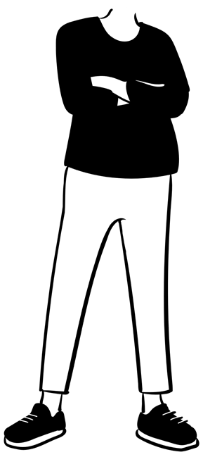
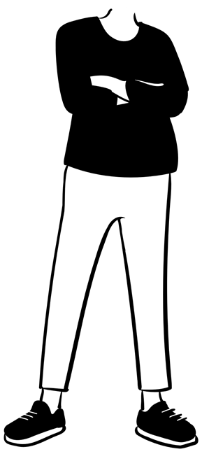

duct’air version 4.x
Document créé le : 17/12/2024
Modifié le : 15/01/2025 21:05:31
Orientation des coudes
Qu’est qu’un coude « à chant » ou « à plat » ?
La question est souvent posée.
Parfois on parle aussi de coude « montant » ou « tournant », qui n’a pas réellement de sens. Cela dépend de l’origine que l’on prend.
Ci-dessous, voici quelques exemples de coudes sur des réseaux types.


 

Vue en plan
Visuellement, vue de dessus, les coudes 1 et 3 sont identiques. La largeur, que nous allons appeler A, est identique soit 500 mm.
Mais la hauteur, que nous allons appeler B, est différente. Pour le coude 1, B = 300 et pour le coude 3, B = 800
Le coude 1 est un coude à plat et le coude 2 est un coude à chant.
Pourquoi ?
· Quand la largeur est supérieure à la hauteur (500 > 300), il s’agit un coude à plat
· Quand la largeur est inférieure à la hauteur (500 < 800), il s’agit un coude à chant
Vue coupe A-A
Visuellement, vue en coupe, les coudes 2 et 4 sont des coudes montants. Mais l’un est à chant et l’autre est plat.
Pour le coude 2 :
La largeur, que nous avons précédemment appeler A, devient la hauteur de la pièce. A est égal à 500.
La hauteur, que nous avons précédemment appeler B devient la largeur de la pièce. B est égal 300.
Si on reprend la même logique que pour la vue en plan, la largeur de la pièce est inférieure à la hauteur donc le coude 2 est à chant.
Pour le coude 4 :
La hauteur se retrouve dans la largeur (800). Et la largeur devient la hauteur (300).
La largeur (800) est supérieure à la hauteur (300), le coude 4 est à plat.
En résumé :
Afin de mémoriser la différence, vous pouvez référer aux images ci-dessous :
· Sur un coude à plat, vous pouvez monter sur vos deux pieds
· Sur un coude à chant, vous pouvez qu’un seul pied au risque de tomber !
 |
|||